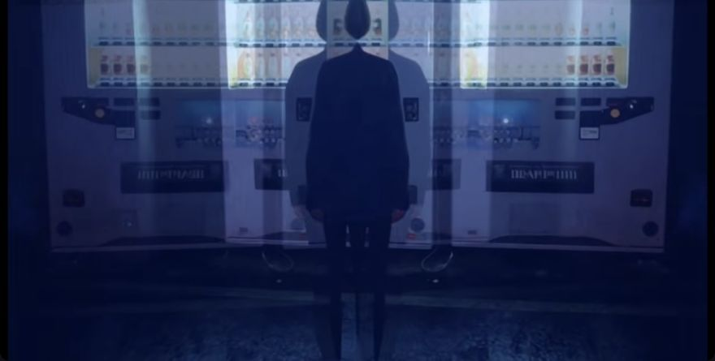

The story in seven sentences.
At 00:05 in the video, opens in a new tab, a short-haired figure appears beside water that reflects a building and another figure. Early rooftop images show a figure with white wings and other figures in light clothing at different heights (00:20 in the video, opens in a new tab and 00:45 in the video, opens in a new tab). At 01:00 in the video, opens in a new tab, a person in dark clothing appears before pale fireworks above water. The middle includes a train passenger with headphones and a computer (01:50 in the video, opens in a new tab), a person with white face makeup beside a window (02:05 in the video, opens in a new tab), and a figure crossing a rooftop (02:20 in the video, opens in a new tab). White wings also appear in a long indoor corridor at 02:45 in the video, opens in a new tab. Near the end, overlapping images appear around television sets at 03:10 in the video, opens in a new tab and vending machines at 04:05 in the video, opens in a new tab. The final selected image returns to a train passenger with headphones, a screen device, and white wings at 04:15 in the video, opens in a new tab.

A possible reading.
The video adds an uncertain visual story to the lyrics. Repeated settings and similar faces may represent different people, different versions of one person, or changing states of mind. The selected images do not settle these identities. White wings may suggest freedom or protection, while high rooftops and distant figures may suggest risk or separation.
The high ledge at 00:45 can support Jeremy’s darker reading of danger or a wish to escape. Yet the selected images do not establish that a character dies. The song also supports a reading of temporary relief through love and connection.